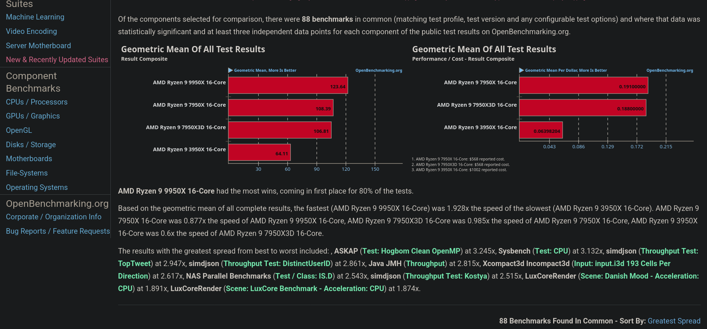

Giovanni's Diary > Subjects > Programming > Linux > Notes >
Benchmarking on Linux
Running benchmarks is ultimately the best way to compare two different systems or to assert that a particular modification has had any positive or negative effect on the system's performance. To do benchmarks I have been using the phoronix test suite, in this document I will briefly explain what phoronix is and how It works.
Overview
Phoronix is the name of a famous website founded by Michael Larabel in 2004 where Michael has been publishing benchmarks and news of linux applications for the most part. I personally think his website is one of the most reliable sources of information regarding performance and news on latest software and hardware. Michael has also create his testing framework, the Phoronix Test Suite, which he uses for all his benchmarks.
The Phoronix Test Suite is composed of an immense number of benchmarks supporting many operating systems including Linux, Windows, maxOS, Solaris and various BSD. Around this tool there is a community of people creating new tests and sharing results in the openbenchmarking.org website. Here, anybody can view and compare them via the web interface. Furthermore, you can schedule and run your custom test suites on multiple machines and visualize results in nice graphs of various kinds.
Command line usage
You can download the phoronix test suite from the official github page, or through you favorite package manager. Fedora provides the package "phoronix-test-suite-$VERSION". Running the command will give you a bunch of possible flags you can enter.
phoronix-test-suite help
For the most basic usage, you may want to select and run a test. Let's first list all the available tests:
phoronix-test-suite list-all-tests
Let's pick for example "pts/unpack-linux", a popular test to unpack the linux kernel. To get more information about a single test, run:
phoronix-test-suite info pts/unpack-linux
Some tests may depend on some programs which you need to have installed in your system, those programs are usually listed under the "Software Dependencies" voice on the infos.
Let's try to run the test now. Note that the tests are lazily fetched meaning that you don't have all the tests downloaded in you system but you decide which one to download. When running a test it automatically gets downloaded.
phoronix-test-suite test pts/unpack-linux
The program will ask if you want to save the results to a file, and to give an unique name for the test. The test will start running, often multiple times. After completion, you are asked if you want to view the results on a web page, otherwise you will be able to do so from the command line by starting the result viewer:
phoronix-test-suite start-result-viewer
From here you get a web page where you can explore the results, compare them and export them in various formats such as pdf, html, json etc..
openbenchmarking.org
You can view other people's benchmarks and tests on openbenchmarking.org. It is particularly useful to download or compare the results directly through the browser by writing a comma separated list of the IDs of the benchmarks you want to compare on the url. It is easier to see with an example, the request with the following url will compare the results between the test "2505249-NE-RES42653018" and "2505242-NE-RES51774018", where each ID was generated when uploading a result to the website:
https://openbenchmarking.org/result/2505249-NE-RES42653018,2505242-NE-RES51774018
The website is also useful to look for specific tests and their results over various systems averaged by all the tests from the community. You can find this information in the tests page.

Figure 1: A test on openbenchmarking.com
Phoromatic server
The coolest think about phoronix in my opinion is the phoromatic-server. Using the same program we have been using to run the tests, we can host a server using:
phoronix-test-suite start-phoromatic-server
This will start a web interface where you can remotely manage benchmarks on multiple machines. When you first open the web page, you can login or create an account (locally), then you will get an overview page with the state of the various machines you have connected and which benchmarks are running or are scheduled to run.
From the "systems" page you can manage your machines. You will get a list of the connected machines with a description of their hardware and software. The page contains instructions to connect other machines, which looks like running a command similar to:
phoronix-test-suite phoromatic.connect 10.10.100.1:8484/VA9KRR
From the "test" page you can browse tests, and from the "testing" page you can schedule them. You usually need to create a custom test suite which is just a collection of one or more tests to run. You can then run the suite and see the results in the "results" page.
Even if the user interface does not look pretty, phoronix is a really powerful tool that does the job done. There are many more functionalities and I think It is worth the time to learn and explore what the tool is able to do.
Travel: Linux Notes, Index